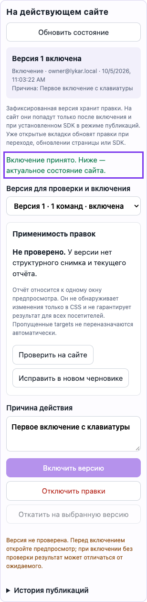
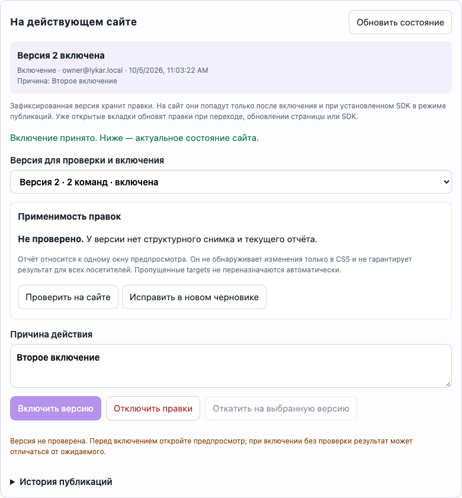
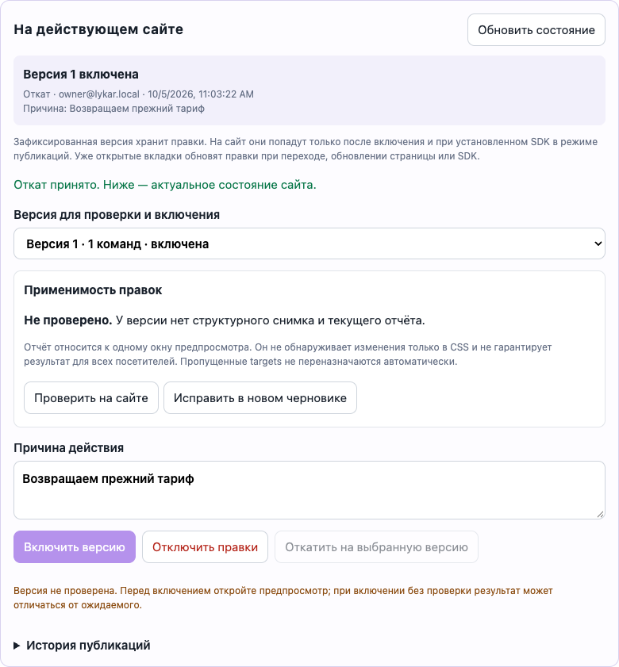
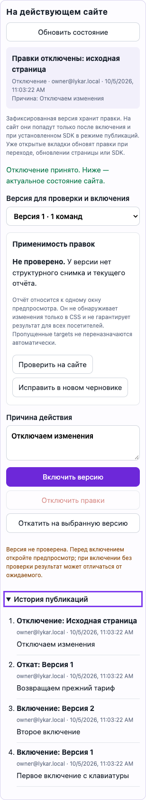

LYKAR / SERVICE-V1 / E2 · 5 октября 2026
Публикация: Admin, SDK и API готовы
Deploy, Disable и Rollback имеют API, неизменяемую историю и защиту от повторных и конкурентных запросов. SDK применяет активную версию, корректно отключает и откатывает её. Владелец управляет публикацией из Admin и вручную исправляет версию через новый черновик.
План · API-контракт · Сервисный контракт
Публикация и ручное исправление доступны владельцу
Admin различает черновик, зафиксированную версию и активную публикацию. Включение, отключение и откат требуют причины; история показывает действие, участника и время. История доступна участникам, изменять публикацию могут Owner/Admin.
- Конфликт revision перечитывает состояние и сохраняет выбор/причину. После потери ответа можно повторить ту же команду с исходным ключом. Принятый исторический ответ не выдаётся за актуальное состояние.
- Проверка открывает реальный private preview. Admin проверяет popup, Origin, nonce, Page и Release; SDK отправляет только разрешённые поля диагностики из текущей PageSession, без capability или текста страницы.
- Отсутствие отчёта обозначено «Не проверено». Известные ошибки и отсутствующие targets блокируют включение проверенной версии. Conditional registered/superseded остаются видимыми безопасными пропусками.
- Ручной repair импортирует immutable base Release и Draft delta в один EditorSession. Новая target-repair команда заменяет прежнюю только при replay; API сохраняет delta, исходный Release неизменен. Условная группа переназначается целиком с сохранением условия и эффекта.
- Мобильные переносы исправлены для длинных адресов. Пройдены переключение фокуса, клавиатурное включение, история и 390 px layout. WebKit/macOS использует Option+Tab для перехода к кнопкам.
Проверки окончательного среза
| Проверка | Результат | Evidence |
|---|---|---|
| Build всех workspaces | PASS | log · команда и время |
| Typecheck, включая E2E | PASS | log · команда и время |
| Protocol: 23/23 | PASS | log · команда и время |
| Runtime: 109/109 | PASS | log · команда и время |
| SDK: 84/84 | PASS | log · команда и время |
| Editor bridge: 86/86 | PASS | log · команда и время |
| API/PostgreSQL: 31/31 + HTTP smoke | PASS | log · команда и время |
| Browser: 74/74 | PASS | log · команда и время |
302 unit + 31 API/PostgreSQL + 74 browser tests, без failed/skipped/flaky в финальных прогонах. Chromium 32, Firefox 21, WebKit 21. Все 5 новых Admin/repair сценариев пройдены в каждом браузере. Регрессия охватывает обычную доставку, React/Vue CSR/SSR, PageSession, replay safety, auth/editor, сохранение/конфликт/undo, version/share и A/B.
Сводка и browser cases · Playwright JSON · История попыток. Предыдущие неуспешные прогоны сохранены отдельно; в них обнаружены мобильный overflow, особенности клавиатуры WebKit и зависимость старых fixtures от общей Page. Данные и assertions не удалялись ради PASS.
Визуальная приёмка




Размер production assets
| Файл | Raw bytes | Gzip 9 bytes |
|---|---|---|
| packages/sdk/dist/sdk.iife.js | 31420 | 9419 |
| packages/sdk/dist/runtime-core.iife.js | 86930 | 25572 |
| packages/editor-bridge/dist/editor.iife.js | 283731 | 73575 |
| packages/sdk/dist/index.js | 205549 | 43072 |
| apps/admin/dist/app.js | 121471 | 23686 |
Размеры измерены локально, hashes и метод. Старый editor raw limit 100000 bytes всё ещё превышен. Новые бюджеты не считаются утверждёнными; performance/staging gate относится к 18.
Границы результата
- Отчёт относится к одному preview и хранится в открытой панели; structural fingerprint не обнаруживает CSS-only drift и не гарантирует состояние всех посетителей. Автоматического переназначения targets нет.
- Технический workflow E2 выполнен локально. Внешний сервис, HTTPS staging, реальные письма и самостоятельное подтверждение домена относятся к последующим этапам. Решения 02 остаются открытыми.
- Публикация требует установленного SDK с
delivery: 'deployment'. Уже открытые вкладки получают изменение при refresh/navigation/reload; live push не добавлен. Первая версия A/B остаётся по ссылкам. - Следующая последовательная задача: SERVICE-V1-06 — регистрация независимых владельцев.
Идентификация среза
HEAD e565328c339af5f12e488c37e0c972ae181d3dc9 + рабочие изменения; 298 source/config файлов; SHA-256 e3ca7e792730ff1e8198bc582376b6b1a49d320189aca7c1c6f8d7179aa8d593. Манифест. Build/DB/browser запускались последовательно. Внешняя публикация и коммит не выполнялись.
Активная версия доставляется через SDK
При delivery: 'deployment' обычный посетитель получает текущий Release своей Page. Publish только фиксирует версию; Deploy включает её, Disable возвращает исходную страницу, Rollback выбирает ранее активированный Release.
- Анонимный GET с
credentials: omitиcache: no-store. API проверяет Origin. Deployment не отправляет analytics и не загружает editor. - Повторный start использует ту же generation. Refresh, navigation и reload снимают прежние правки и перечитывают pointer. Вкладка не получает live push.
- Editor, share, version и A/B selectors изолированы. Native A остаётся исходной страницей при активном deployment. Пустые, повторные и конфликтующие selectors дают диагностику без fallback.
- Сетевые ошибки и invalid payload оставляют исходную страницу. SDK deadline охватывает fetch и тело ответа, даже если transport игнорирует abort. Старый ответ не меняет новую Page.
- Частичная ошибка компенсирует обычные операции и условные overlays; новые изменения самого host сохраняются. Initial unsafe conditional target завершает replay отказом. Missing/not-ready/inactive остаются отложенными состояниями существующего S4-контракта.
- Metadata:
runtime.deployment; при partial apply —runtime.report. Диагностика показывает снятые операции, а не успешное применение.
Проверки окончательного среза
| Проверка | Результат | Evidence |
|---|---|---|
| Общий build | PASS | log · команда / timestamps |
| Общий typecheck, включая E2E | PASS | log · команда / timestamps |
| Runtime: 106/106 | PASS | log · команда / timestamps |
| SDK: 62/62 | PASS | log · команда / timestamps |
| Browser: 55/55 | PASS | log · команда / timestamps |
168 unit + 55 browser tests, без failed/skipped/flaky. Browser: Chromium 23, Firefox 16, WebKit 16; 24 новых deployment cases. Временная PostgreSQL/API создаётся, мигрируется и удаляется harness; общий стенд использован последовательно. Последний browser harness пересобрал финальные SDK/runtime/fixtures; после него выполнен общий typecheck. Имена и статусы · Playwright JSON · Runtime JSON · SDK JSON.
- script: Publish → Deploy → refresh → Disable → Rollback; preview and native A isolation
- module: Publish → Deploy → refresh → Disable → Rollback; preview and native A isolation
- react csr: deployment respects host hydration, route transitions, remount and disable
- react ssr: deployment respects host hydration, route transitions, remount and disable
- vue csr: deployment respects host hydration, route transitions, remount and disable
- vue ssr: deployment respects host hydration, route transitions, remount and disable
- invalid deployment and unavailable runtime asset leave the original page visible
- browser deadlines and retired requests leave the host available
Регрессия: PageSession lifecycle, replay safety, S4 conditional/SPA/hydration, S3 A/B, auth/editor и versioning/share. API/PostgreSQL 31/31 и HTTP smoke подтверждены отдельным срезом 03 ниже; полный API suite в 04 повторно не запускался, серверный код не менялся.
Размер артефактов
| Файл | Raw bytes | Gzip level 9 bytes |
|---|---|---|
| sdk.iife.js | 30241 | 9046 |
| runtime-core.iife.js | 85200 | 25117 |
| editor.iife.js | 276518 | 71900 |
| index.js | 200363 | 42033 |
Локальный production build, gzip через Python/zlib. Initial script bootstrap укладывается в прежние 80000/25000 bytes. Combined bootstrap/runtime и editor оцениваются отдельно; новые D04 бюджеты остаются PROPOSED. Старый editor raw limit 100000 по-прежнему превышен. HTTPS staging latency/CLS и performance gate относятся к 18. Размеры и hashes.
Предыдущие попытки и ограничения
- Первый параллельный runtime run не поднял workers вовремя; последовательный run прошёл. Это инфраструктурный failure, не выданный за PASS.
- Первый browser run: 15 PASS / 6 FAIL. Слишком широкий test selector считал служебный playground block редактором и прерывал очистку active Experiment. После исправления test selector: 21/21, затем финальная расширенная regression 55/55. Первый log; screenshot/trace/video сохранены в
browser-artifacts/. - Новый unit fixture unsafe conditional был исправлен: ему нужен ready framework root только вокруг условных targets. Финальный тест подтверждает компенсацию обычного текста и уже активного conditional overlay.
- Transport faults детерминированно вводятся в браузере и unit: reject, HTTP failure, hanging fetch/body и late response. Это не проверка внешней сети и не staging SLA.
- Существующие отдельные defaults сохранены: network 5000 ms, replay 2000 ms, lazy runtime asset load 10000 ms. Предлагаемый D03 network 2000 ms не внедрён. Low-level runtime получает caller-owned fetch/signal; ограничение сети реализует SDK.
- На момент среза 04 Admin и repair ожидали задачи 05; она завершена выше. Подтверждение домена пользователем — 08, инфраструктура и новые budgets — 02/12/18. Внешняя публикация не выполнялась.
Идентификация
HEAD e565328c339af5f12e488c37e0c972ae181d3dc9 + рабочие изменения. SHA-256 c65ea103e04ba557952fdf6b8c80ebea7a9646c707892101e203f7c57b9cd36a, 288 файлов. Source manifest и метод hash · SDK-контракт.
Что реализовано
- Миграция 010 добавляет append-only activation history. Последняя запись — указатель активной версии; существующие Page начинают с revision 0 / Native.
- Owner/Admin могут включить Release своей Page, отключить его или откатиться к ранее активированной версии. Editor/Viewer читают состояние и историю; изменения запрещены.
- Одна транзакция блокирует Page и удерживает доступ участника до commit. Две разные команды одной revision дают один успех и один conflict; одинаковый retry возвращает исходный результат без второго эффекта.
- Runtime получает указатель и manifest одним SQL snapshot, только для подтверждённого Origin. Ответы no-store; приватные selectors и Authorization не принимаются этим endpoint.
- Publish и winner A/B не активируют deployment. Native A остаётся native при активной другой версии. Legacy manifest resolve без selector остаётся 204.
Проверки
| Проверка | Результат | Evidence |
|---|---|---|
| API build | PASS | npm run build --workspace lykar-lib-serverlog · command/timestamps |
| API + PostgreSQL + HTTP smoke | PASS | npm run test:e2e:httplog · command/timestamps |
| API typecheck | PASS | npm run typecheck --workspace lykar-lib-serverlog · command/timestamps |
31/31 тест, 0 failed, 0 skipped. Включены прежние API suites и новые unit/PostgreSQL сценарии. Отдельно прошёл HTTP smoke. Прогоны последовательные на изолированной временной PostgreSQL; внешние сервисы не использовались. Полный список тестов.
- deployment validation rejects invalid mutations before reaching the repository
- canonical retry hashes ignore reason whitespace and request identity but include every mutation field
- state and bounded history validate identifiers and pass the cursor to the repository
- runtime resolution requires an explicit valid key, pathname and origin
- 001..010 installs fresh and deployment history is immutable with same-page release references
- 010 upgrade preserves existing pages and releases without deploying them
- a transactional 010 failure rolls back its table, unique constraint and migration ledger entry
- PostgreSQL deployments serialize activations and isolate public runtime resolution
Интеграционный deployment-сценарий проверяет Deploy → Disable → Rollback, pagination, stale revision, lost-response retry после последующих активаций, разные payload с одним ключом, два concurrent retry, чужие Page/Release, роли/отзыв доступа, CSRF, Origin, private selectors и неизменяемость SQL rows.
Миграции: свежая установка 001–010 прошла настоящим CLI в HTTP harness. Upgrade с данными 001–009 и принудительная ошибка после DDL 010 проверены в изолированных schemas, с теми же SQL/ledger BEGIN/COMMIT/ROLLBACK правилами. Эти изолированные тесты не проверяют CLI advisory lock. Legacy environments уже удалены миграцией 006.
Идентификация
HEAD e565328c339af5f12e488c37e0c972ae181d3dc9 + рабочие изменения. SHA-256: 565355a3c8ee326f3515eb587b385f05ff0df66055a9a3b667892bc80658d6ef. Манифест 55 API/config файлов и метод hash. API build выполнен предварительно; HTTP harness пересобрал окончательные source/tests, затем прошёл typecheck.
Границы результата
- На момент завершения backend 03 SDK ещё не вызывал endpoint. Интеграция выполнена в срезе 04 выше; кнопки Admin и repair завершены в срезе 05 выше.
- Origin verification проверяется по существующему verified_at; в тесте оно устанавливается контролируемо. Клиентский workflow подтверждения домена — задача 08.
- История append-only, без TTL; управляемое удаление данных и backup retention — задача 15. Replay старого запроса возвращает прежнюю принятую revision; UI должен отдельно перечитать актуальное состояние.
- Новые budgets и providers из 02 не утверждены автоматически. По повторной команде продолжения выполнен независимый backend-срез; 02 остаётся IN_PROGRESS, инфраструктура 12 ожидает решений.
- Browser deployment/SPA/failure matrix подтверждена срезом 04 выше; API-срез 03 имел отдельную проверку. Технический workflow E2 завершён срезом 05; общая готовность внешнего сервиса проверяется последующими этапами.
Subagents: gpt-6.1-sol / medium, отдельные test files; общий стенд запускал основной исполнитель. Существующие изменения редактора сохранены. Коммит и внешняя публикация не выполнялись.